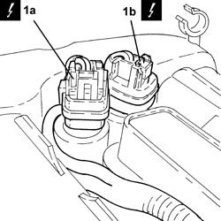
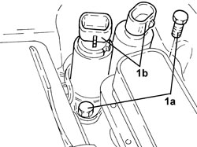
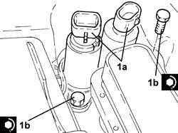

1056F53 VARIABLE VALVE TIMING ELECTROMAGNETS IN INTAKE/EXHAUST TIMINIG SYSTEM - R.R.
- Path
- Procedures > 10 ENGINE > 1056 PETROL INJECTION SYSTEM > 1056F PETROL DIRECT INJECTION SYSTEM > 1056F53 VARIABLE VALVE TIMING ELECTROMAGNETS IN INTAKE/EXHAUST TIMINIG SYSTEM - R.R.
- Kind
- repair procedure (removal / refitting; the operation number is the code)
- Applies to
- engines: 2.2 JTS; all production periods
- Interactive page
- https://sloeber94.github.io/elrnDB-aBrrSpdr/en/#/946001915
Applies to: engines: 2.2 JTS; all production periods
 Removing
Removing
 Refitting
Refitting- Make sure that the ignition key is in the OFF position, then disconnect the battery terminal (-).
Description | Connector | |
|---|---|---|
- | Battery |
1. Disconnect the electrical connections (1a) and (1b) from the phase transformer electromagnets.
Description | Connector | |
|---|---|---|
1a | Exhaust side phase transformer solenoid valve |
Description | Connector | |
|---|---|---|
1b | Inlet side phase transformer solenoid valve |

Applies to: engines: 2.2 JTS; all production periods
1. Undo the bolts (1a) and remove the phase transformer electromagnets (1b).

Applies to: engines: 2.2 JTS; all production periods
Refitting
Removing1. Place the phase transformer electromagnets (1a) in their housings and secure them tightening the bolts (1b) to the recommended torque.
Component | Fastening | dia | Value (daNm) | Validity |
|---|---|---|---|---|
Phase transformer solenoids | Bolt | M6 | (cylinder head side) 1.0 | 1.9 JTS 2.2 JTS 3.2 JTS |

Applies to: engines: 2.2 JTS; all production periods
- Connect the electrical connections to the phase transformer electromagnets.
- Connect the negative battery terminal.
Topics linked from this page (3)
- A001 BATTERY
- N092 PHASE SHIFTER SOLENOID VALVE ON INTAKE SIDE
- N093 PHASE SHIFTER SOLENOID VALVE ON EXHAUST SIDE